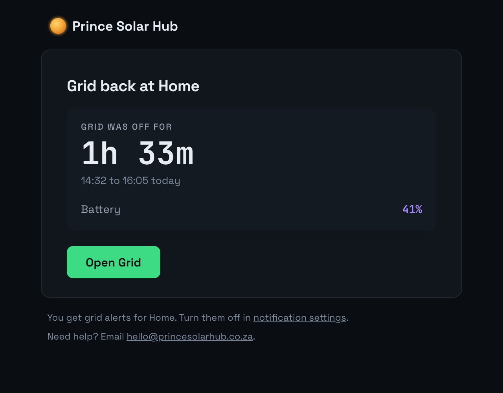

An email when the power goes.
Prince Solar Hub emails you when the grid goes on your SunSynk system, and again when it’s back, with how long it was off. It works while you’re at work or away.

What you get
- Power cut. An email when the grid goes.
- Power back. An email when it returns, with how long it was off.
- Other alerts. Battery hot, panels stopped, an inverter not reporting.
- Pop-ups. On your phone or computer too, if you want them.
Switch off any alert you don’t want, by email or pop-up, in Account.
What it needs
Your logger and router online. Put the router on backup power, so the alert can get out during the cut. See logger keeps going offline.
What else it does
- Battery time leftHow long until it reaches its reserve.
- Watch your parents’ solarTheir system next to yours, from anywhere.
- SunSynk on a TV or tabletFull screen, for the whole house.
- SunSynk data in ExcelDownload any days, up to a year at a time.
- Why Prince Solar HubEverything it adds to the SunSynk app.
Questions
Is it on the free plan?
Yes. Power cut alerts are on every plan, Free included.
How soon does the email come?
Within a few minutes of the cut.
See your SunSynk live.
Free for one plant. Nothing to install.
Try it freeSee pricing